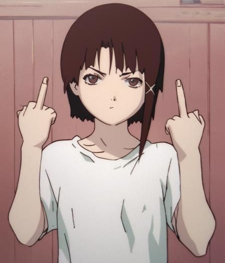
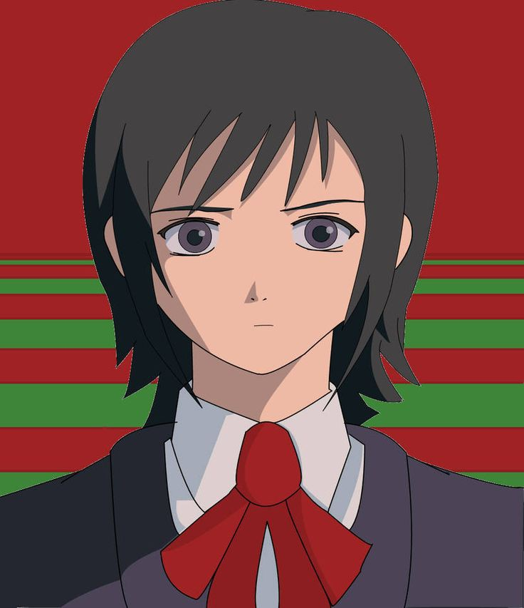
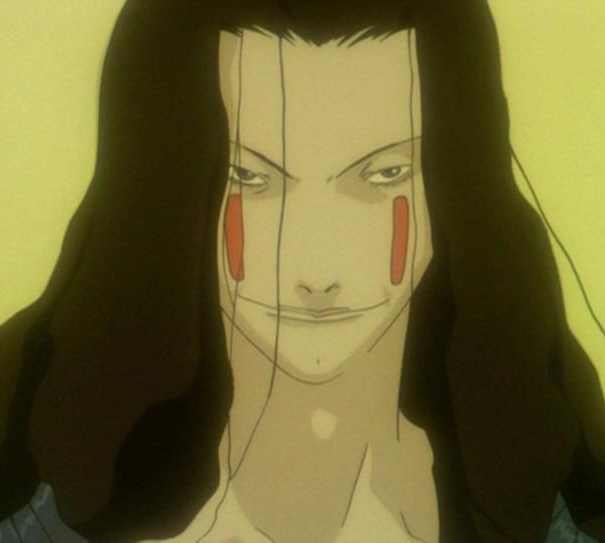

Lain tidak memiliki hubungan sosial dengan masyarakat dan tidak akur dengan keluarganya. Kakaknya lebih aktif bersosialisasi daripada dirinya. Ibunya tidak memiliki emosi, dan ayahnya selalu bekerja dan jarang pulang. Kehidupan Lain yang tidak peduli pejabat.
APA YANG TAK TERINGAT, TAK PERNAH TERJADI. INGATAN HANYALAH SEBUAH CATATAN
Jika seseorang terlalu lama pada internet mungkin dia tidak akan tersesat dan kehilangan dirinya
Serial Experiments Lain (SEL) adalah sebuah serial anime yang mengeksplorasi konsep realitas, identitas, dan komunikasi dalam era digital. Serial ini menggunakan gaya visual yang surealis dan avant-garde, serta memiliki tema-tema filosofis yang mendalam.

Lain adalah seorang gadis pendiam dan pemalu yang tinggal di pinggiran Tokyo bersama orang tuanya, kakaknya Mika, dan ayahnya yang sangat tertarik dengan komputer. Awalnya, Lain tampak seperti remaja biasa yang tidak terlalu tertarik dengan teknologi. Namun, setelah menerima email misterius dari teman sekolah yang sudah bunuh diri, dia mulai masuk ke dunia The Wired (sejenis internet supercanggih).

Arisu adalah siswi sekolah menengah yang ceria, dewasa, dan lebih terbuka secara sosial dibanding Lain. Dia adalah teman satu kelas Lain dan sempat menjadi pemimpin dalam kelompok kecil bersama dua teman lainnya (Reika dan Juri). Meski awalnya terlihat biasa saja, Arisu menunjukkan kepedulian yang tulus kepada Lain ketika gadis itu mulai berubah dan dijauhi oleh orang lain.

Eiri Masami adalah arsitek pemikiran dari dunia The Wired. Ia bukan pencipta Lain secara teknis, tapi “ayah ideologis”-nya. Dia mewakili sisi dingin dari teknologi.
Di akhir cerita, Lain menyadari bahwa dirinya bukan manusia biasa, melainkan entitas digital yang dapat memanipulasi realitas melalui The Wired. Setelah menghadapi Eiri Masami yang berusaha menjadikannya dewi The Wired, Lain menolak untuk mengikuti ambisi tersebut dan memilih menghapus dirinya dari memori semua orang dan sejarah dunia. Meskipun dunia kembali normal tanpa ingatan tentang dirinya, Lain tetap ada sebagai entitas yang mengamati dari jauh
Setelah dunia di-reset, semua kembali normal. Orang-orang hidup seperti Lain tak pernah ada. Tapi Lain masih eksis di balik realitas, mengamati dari jauh, tak dikenal siapa pun. Di adegan terakhir, Lain menemui Arisu (yang sudah tidak mengenalnya lagi) dan berkata